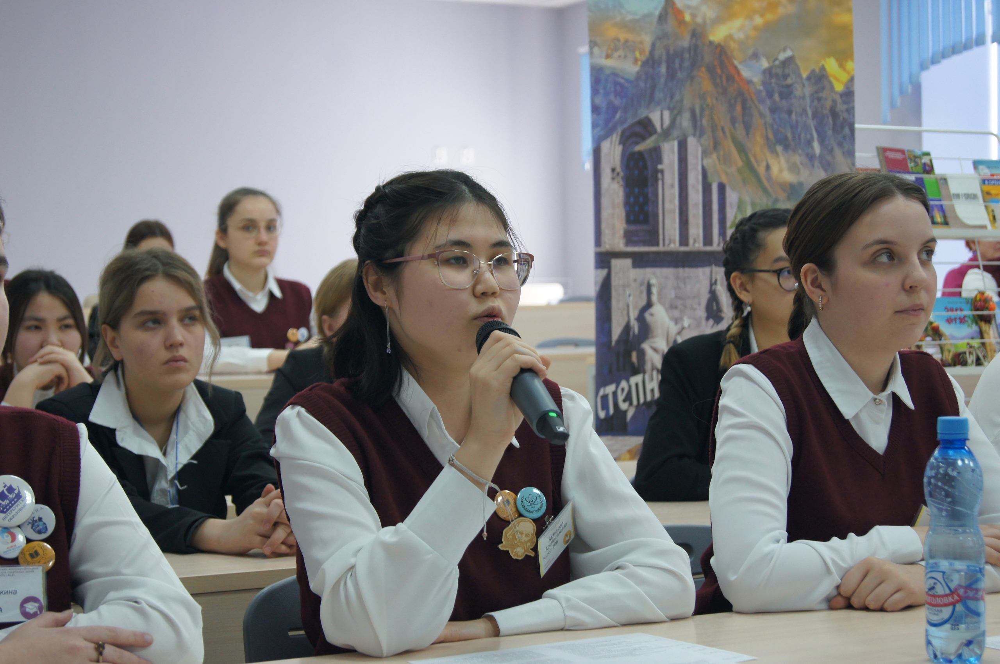
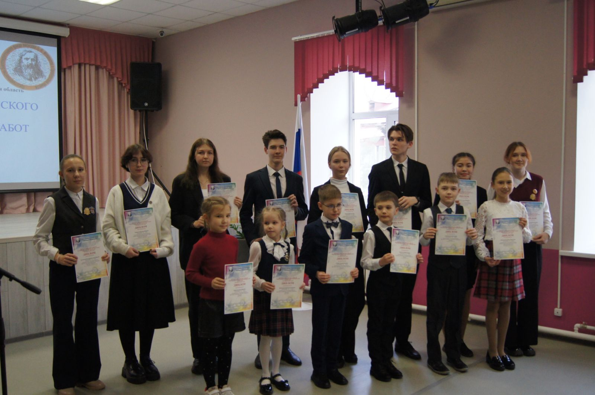
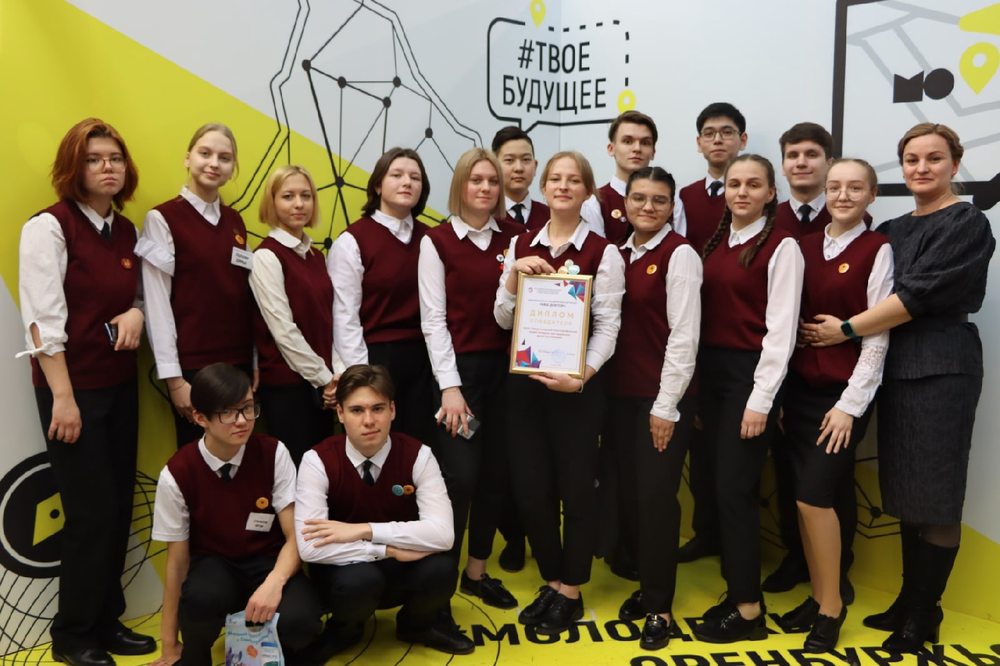

ГАОУ "Губернаторский многопрофильный-лицей интернат для одаренных детей оренбужья"
Технологический профиль
Хочешь поступить в Губернаторский многопрофильный лицей-интернат для одаренных детей Оренбуржья на технологический профиль и связать свою жизнь с точными науками? Тогда тебе к нам!
  
Этот сайт был создан самими учениками лицея, учащихся в технологическом классе. Здесь ты сможете найти абсолютно всё, что поможет тебе присоединиться к нашей лицейской семье на стороне точных наук.
Технологический профиль предполагает изучение математики, физики и информатики на углубленном уровне. После технологического профиля в школе можно смело попробовать себя в программировании — это по-прежнему прибыльная и перспективная профессия. Или работать с техникой изнутри – стать квалифицированным инженером, механиком. А может ты хочешь проектировать здания, заниматься их дизайном и разработкой их конструкции? Такие профессии, как конструктор и архитектор станут доступными для тебя, если ты выберешь технологический профиль.
Для развития интеллектуальных и творческих способностей учеников в лицее проводится разнообразная внеурочная деятельность: занятия по подготовке к олимпиадам, дополнительные занятия в Центре выявления и поддержки одаренных детей «Гагарин», занятия по другим образовательным программам. Также часто проводятся различные научные конференции.